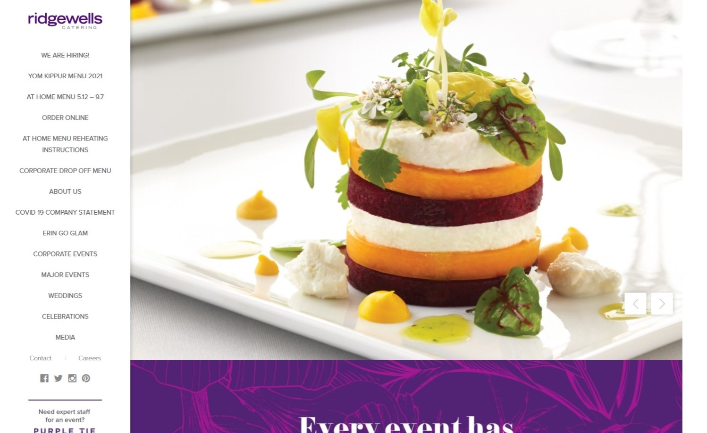
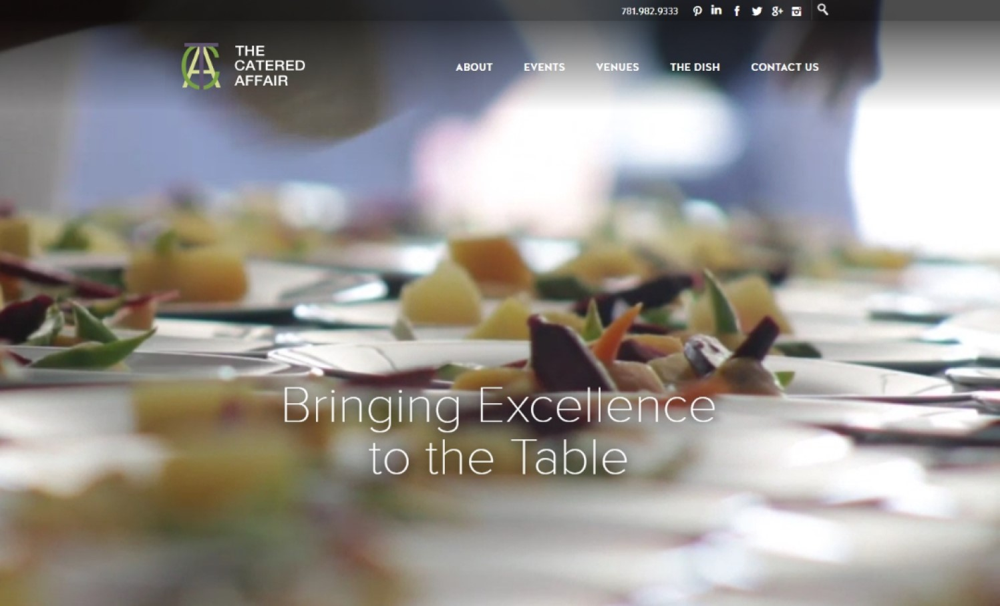

When it comes to creating catering businesses, food or your menu items are not the only things that matter. The look of your website can make or break a deal for many prospective customers. That’s why we have compiled this list of 40 Best Catering Websites! These websites are beautifully designed and offer an excellent user experience to potential clients. So before you start building your own catering site, take a look at these great examples first!
1. Ridgewells Catering
Why it works: Rigwells Catering’s website is clean and modern. The minimal texts and simple sitemap makes it easy to find what you’re looking for. This site also features outstanding photography!
ridgewells.com
2. The Catered Affair
Why it works: The uniqueness and elegance of this website design stands out. The Catered Affair featured a header video that adds sophistication and allows you to imagine yourself being there. This web site also highlights excellent photography that promotes their business.
thecateredaffair.com
3. Global Gourmet
Why it works: Global Gourmet’s website exudes elegance and sophistication with its exquisite and professional photographs, limited color scheme, and modern typography. A well-designed website that is simple to use and navigate.
 ggcatering.com
ggcatering.com
4. Joy Wallace
Why it works: On this catering website, the colors are bright and cheerful with exceptional photography. The flow of information is excellent, leading to a call to action.


Well-Designed Catering Websites
5. Clubvivre
Why it works: Clubvivre’s website is both functional and attractive, as it is well-organized and structured. A professional and minimalistic color scheme is used. You’ll have no trouble finding what you’re looking for.
 clubvivre.com
clubvivre.com
6. Queen of Hearts Catering
Why it works: The color scheme is pleasant and consistent throughout the Queen of Hearts Catering website. On the about us page, there is a lot of useful information and photos.
 queenofheartscatering.com
queenofheartscatering.com
7. Tommy Ruff Fish Bar
Why it works: This catering website is well-organized. The colors are consistent and the animations are subtle and unobtrusive. This site also has outstanding graphics and photographs that are featured in well-thought-out branding. The sticky navigation makes online ordering easy.
 tommyruff.com.au
tommyruff.com.au
8. Berlin Cuisine
Why it works: The hero banner is very eye-catching, displaying stunning photos and a great creative video. Berlin Cuisine’s website prominently displayed the company logos of satisfied clients.
 berlin-cuisine.com
berlin-cuisine.com

best catering websites
9. The Public Catering Co.
Why it works: The Public Catering website showcases an intriguing combination of video and image slider in the hero area. It’s a simple design that makes good use of quality images.
 publiccatering.co.nz
publiccatering.co.nz
10. Hattie Mauleverer
Why it works: This site shows the effective use of white space. Throughout this catering website, menu pictures were used strategically.
 hattiemauleverer.co.uk
hattiemauleverer.co.uk
11. Relish Catering & Events
Why it works: Despite the fact that this website’s theme is bright and colorful, it is not cluttered, and the web design is interesting. This event and catering website is easy to navigate and follow.
 relishcateringco.com
relishcateringco.com
12. Little Wolf
Why it works: A simple but effective website design. Little Wolf’s website is simple and intuitive to use, emphasizing the importance of connecting with customers or users.
 littlewolfcatering.co.nz
littlewolfcatering.co.nz

Catering Websites For Inspiration
13. Chilli Bees Catering
Why it works: Chilli Bees Catering makes incredible use of bold, clear, and stunning photographs throughout the pages. The elements make the page appealing with a touch of class and modernity to it.
 chillibeescatering.co.uk
chillibeescatering.co.uk
14. By Word of Mouth
Why it works: The web design is clean and simple, yet elegant. The homepage of Word of Mouth’s website is both intriguing and informative, with a catchy headline video.
 bywordofmouth.co.uk
bywordofmouth.co.uk
15. Fords Fluent N’ Food Catering
Why it works: This website used interesting and intriguing pictures to pique visitors’ attention. The subtle colors and contemporary typeface create a good balance on the pages.
 fluentnfood.com
fluentnfood.com
16. Bubble
Why it works: The header photos are interesting and intriguing, so you’ll want to sit back and enjoy the slides. The website of Bubble Food is full of pictures that truly showcase the quality of their service.
 bubblefood.com
bubblefood.com
Professional Catering Websites
17. Smokin Hot N’ Saucy
Why it works: The site’s design is pleasant and appealing, and it corresponds to the cuisine that they serve. Smokin Hot N’ Saucy has a clean website with beautiful pictures and a clear call to action.
 smokinhotnsaucy.com.au
smokinhotnsaucy.com.au
18. Bunji Catering
Why it works: Bunji’s website is user-friendly even on mobile devices. Its bright color scheme, contemporary typeface, and simple grid structure make it appealing and easy to navigate.
 bunjicatering.com.au
bunjicatering.com.au
19. Above & Beyond
Why it works: Above & Beyond is an elegant catering website that is both attractive and easy to use. This site includes large, clear, and enticing pictures of its menu and past events.
 abovecatering.com
abovecatering.com
20. Acquolina Catering
Why it works: Clean, modern, and inviting. Acquolina Catering focuses on showcasing their people, service and cuisine in a simple, easy to explore, attractive website.
 acquolinacatering.com
acquolinacatering.com
Catering Professional Websites
21. Chapa
Why it works: The design is simple and attractive. The website of Chapa effectively combines a plain white background with vibrant food images.
 chapa.com.au
chapa.com.au
22. Eco Caters
Why it works: The structure of this catering website is excellent. The colors used are attractive, the sections are easy to follow and there are strong CTAs. The images on the home page are the first to catch people’s eyes.
 ecocaters.com
ecocaters.com
23. Funky’s Catering
Why it works: With its gorgeous and professional pictures, limited color palette, and modern typography, this website oozes beauty and sophistication. A well-designed website that is simple to navigate and use.
 funkyscatering.com
funkyscatering.com
24. Joels Catering & Special Events
Why it works: The photos, color palette, and font on this catering website radiate luxury. Take a peek at their venues page to see how distinctive the font combination, layout, and color palette are on this website.
 joels.com
joels.com

Best Catering Website Design
25. LRE Catering
Why it works: An elegant catering website design that focuses on promoting their service by using beautiful photos and complementing it with a light background and ample white space.
 lrecatering.com
lrecatering.com
26. Salt Block Hospitality
Why it works: Because of its contemporary typeface, excellent photography, and minimalist earth-tone color scheme, this website has a sophisticated look and feel.
 saltblockhospitality.com
saltblockhospitality.com
27. Proof of the Pudding
Why it works: The website of this catering business is bright and airy. This demonstrates that simple but well-thought page details can go a long way.
 proofpudding.com
proofpudding.com
28. Soul Catering
Why it works: A contemporary-looking website for a catering business. Soul Catering is both interesting and simple to explore due to the beautiful visuals, navigation menu, thumbnails, and call-to-action buttons.
 soulcatering.com.ua
soulcatering.com.ua
Modern Catering Websites
29. A’BriTin Catering & Hospitality
Why it works: A modest catering website with a simple structure that serves as a portal to other websites of local catering businesses. A’BriTin has both aesthetic and practical value.
 abritincatering.com
abritincatering.com
30. Fresh Connections Catering
Why it works: A fresh website concept with superb images that bring richness to the brand. The sticky navigation allows users to access the contact information and online ordering function.
 fccatering.com
fccatering.com
31. Crave Catering
Why it works: With an exquisite color palette combined with a simple layout together with a mixture of classic and modern typeface, this elegant website is the outcome of a masterful fusion of modern and traditional style.
 crave-catering.com
crave-catering.com
32. Catering by Michaels
Why it works: This catering website used a dramatic hero image to captivate the visitors. Links to the event services, team, weddings, and venues are easily accessible in the homepage sections.
 cateringbymichaels.com
cateringbymichaels.com
top catering companies
33. Houston Catering Concepts
Why it works: Plates are cleverly used to display and download menus. Houston Catering Concepts has a user-friendly website that is easy to understand and use. It is not as delicate or exquisite as the other catering company mentioned in this post, but it is unique and refreshing.
 houstoncatering.com
houstoncatering.com
34. Begnis Catering
Why it works: Begnis Catering has a striking color palette, eye-catching pictures to promote its brand, and an amusing screen-wide video in one of its sections.
 begniscatering.gr
begniscatering.gr
35. Rose & Food
Why it works: Rose & Food Catering’s website features a clever scrolling clients section that promotes trustworthiness. Beautiful photos of their sumptuous menus are highlighted with the effective use of whitespaces.
 roseandfood.co.uk
roseandfood.co.uk
36. Crystal Plaza Group
Why it works: The use of their brand color across their company website is excellent. The typeface utilized is a pleasant mix of traditional and modern styles. This website’s photography is outstanding.
 crystalplazagroup.com
crystalplazagroup.com
Beautiful Catering Websites
37. Lieblings Burger Catering
Why it works: Lieblings Burger features a video header to catch the attention, as well as a dark background to make their brand colors pop. Bold sans-serif headings are used to make important information stand out.
 lieblings-burger.de
lieblings-burger.de
38. Cove Catering
Why it works: The website of this catering company is simple but appealing. With a huge picture on the home page that draws you in, the website is both fascinating and amusing to explore. Sample menus, services, and packages are also easily accessible just below the hero image.
 covecateringbrisbane.com.au
covecateringbrisbane.com.au
39. Abigail Kirsch
Why it works: Abigail Kirsch’s catering website is a lovely and modern site that is simple to use. The outstanding pictures on the home page will encourage you to explore their services.
 abigailkirsch.com
abigailkirsch.com
40. Anoush
Why it works: This award-winning caterer properly showcased their expertise using great videos and photographs of their food. The material is well-organized, so the visitors will be able to discover what they’re searching for with ease.
 anoush.com
anoush.com
Conclusion
We hope that these best catering websites have inspired you and given you some ideas for your own website style and design. If you’re looking to take things a step further, we can help! Our team is ready to create an amazing new look for your catering business.
We offer a Free Custom Mockup of your new site before you sign or pay anything. Click the button below to learn more.